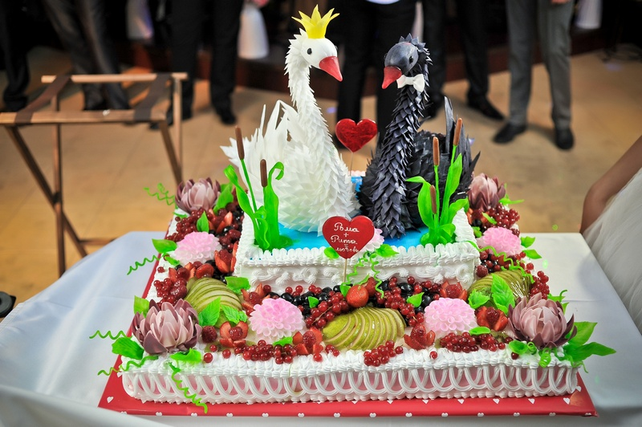

В одном провинциальном городе под названием Оренбург, жила-была девочка ее звали чаще Викуля, чем Вика. Эта очень милая красивая девочка с кудряшками всегда веселая и полна жизненной энергии…
А вот где и как родился этот тортик об этом и пойдет речь…
Молодая девушка в этом же провинциальном городе очень веселая, талантливая, влюбленная в жизнь, которая умела готовить тортики, решила открыть свое дело. На самом Центральном рынке, в павильоне появилось место по продаже тортиков с яркой вывеской «Вини-Пух». Тортиков было много… Но тортик «Взбитые Сливки» внешне был прост, но ювелирные тонкие бисквитные коржи нежно пропитанные взбитыми сливками полюбились многим покупателям…
Шли годы и маленькое местечко по продажи вкуснейших тортиков выросло в уютное кафе…
Потом появился кондитерский цех.
Шеф повара «ВиниПуха» участвовали в мастер-классах от сильнейших начальников десертов в Москве, обучались в Лондоне, у профессионалов-кондитеров из Италии и Франции.
Ассортимент тортиков разрастался… Оренбуржцы благодаря мастерам из «Вини-Пуха» могли вкушать «Термесу», «Захер», «Анастейжи»
Всегда пользуются популярностью «Наполеон», «Медовый», «ДонПанчо»